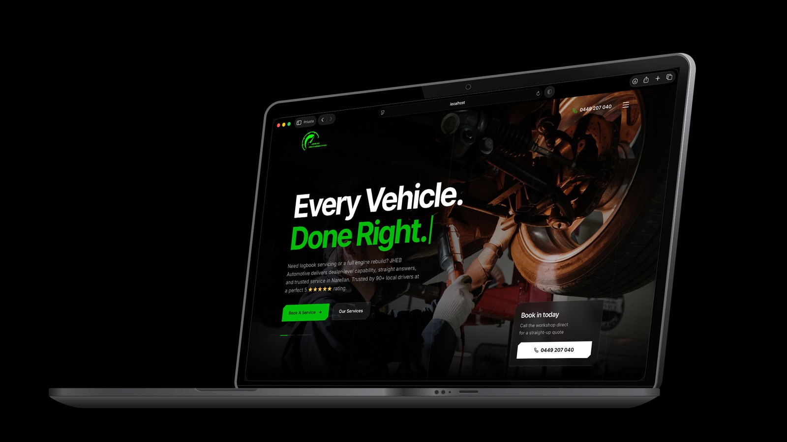
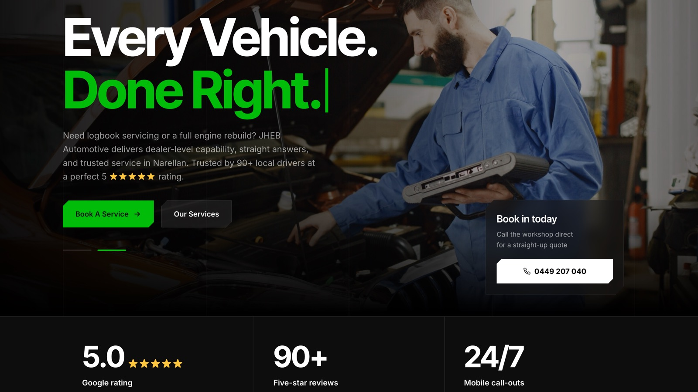
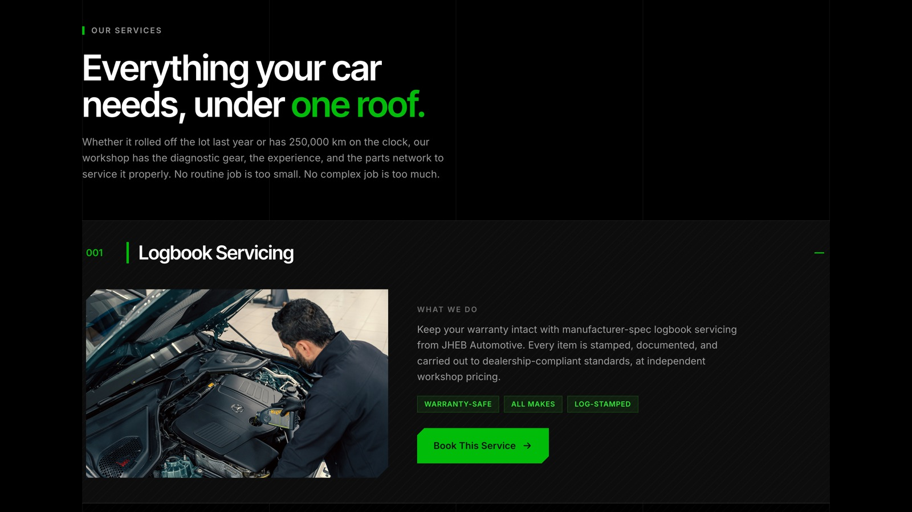
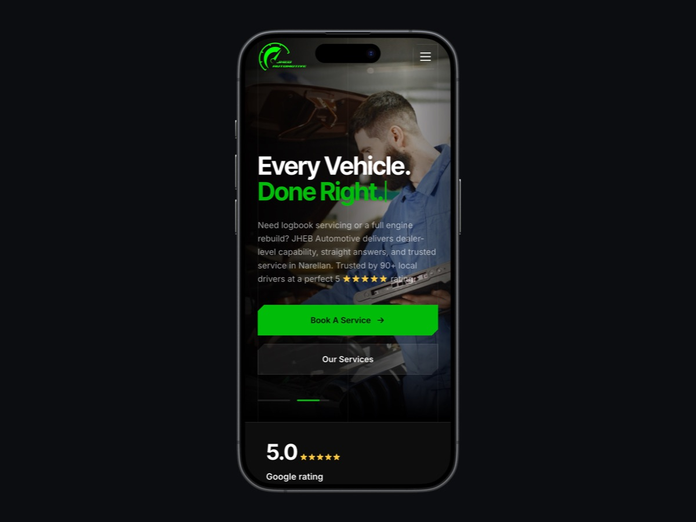
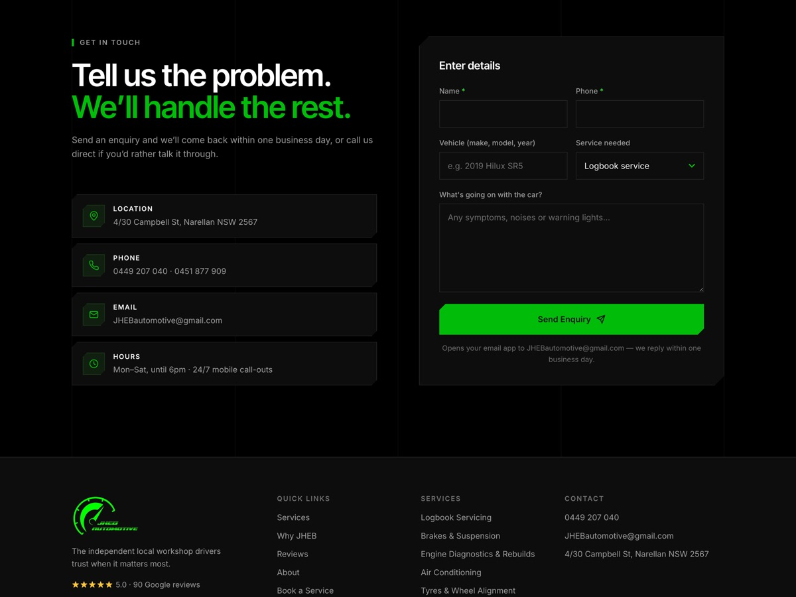
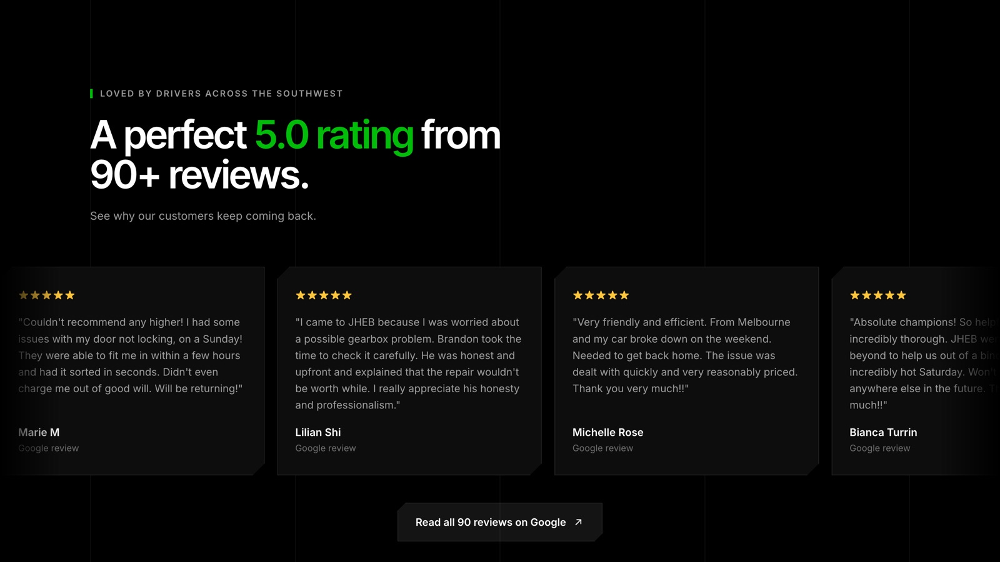

Type
Client project, local small business
JHEB Automotive · Client project · Brand, website and local search
JHEB Automotive is an independent mechanical workshop in Narellan, in Sydney’s southwest, with a perfect 5.0 Google rating from 90 reviews. Its website didn’t show any of that. It was a single page that named the business, listed a few services, and gave a phone number.
I led the work end to end: diagnosing the problem, repositioning the brand, planning the information architecture and local search strategy, then designing, writing, and building a mobile-first website. I also wrote the pitch that framed it as an investment. The aim was to make the workshop’s reputation visible at the moment people compare mechanics, and to make calling or booking effortless from a phone.

Challenge
Most drivers check two or three mechanics before they pick up the phone. They read reviews, scan the website, and look for a reason to trust one workshop over another. JHEB had already done the hard part: years of good work, repeat customers, and a perfect rating. But the website was a business card, not a sales asset, and it was losing that comparison by default.
So the brief was not “make it look modern”. It was to close the gap between how good the workshop is and how it shows up online, without rebuilding anything that already worked.
Role and scope
For a small business, every handover between specialists adds cost and loses intent. I carried the whole engagement myself, so the thinking behind the positioning made it all the way into the code.
Research and approach
Choosing a mechanic is a trust decision made under some anxiety. I mapped the main customer groups and what would tip each one towards booking:
The workshop’s own Google reviews were the richest research source. The themes customers raised most often were honesty, quick work, fair pricing, and thorough explanations. That told me what to lead with. Three principles shaped the design:
Proof comes before persuasion.
Design responseThe rating sits in the first sentence and real reviews are quoted word for word.
The workshop is always one tap away.
Design responseTappable phone numbers throughout and a call card in the first screen.
Every service earns its own space.
Design responseNine services explained on the homepage now, each mapped to its own page later.
Key decision
The positioning I wrote placed JHEB between two familiar options: the dealership that can do everything but charges for it, and the corner shop that is cheap but limited. JHEB could credibly offer the range of a main dealer, the transparency of a trusted friend, and the pricing of an independent.
That became four pillars, each answering a fear customers actually have:
The tone is a skilled tradie talking to you across the counter: plain English, specific, and confident without arrogance. That is where lines like “Straight answers. Proper workmanship. No runaround.” came from.
I also made a deliberate call on claims. The pitch used a strong superlative to sell the positioning, but on the live site an unproven “best in the southwest” claim is a risk under Australian Consumer Law. The website says something the reviews can back up instead: “The independent workshop locals trust.”

Designing the experience
Every section has one job, in the order a hesitant customer needs it answered: can you fix it, should I trust you, and how do I get it booked? The visual language comes from the existing logo, its lime green on a dark, workshop-toned palette, so the brand feels upgraded rather than replaced.
01
“Every Vehicle. Done Right.” with two routes forward: book, or browse services.
02
A track-record strip: the 5.0 rating, 90+ reviews, and 24/7 mobile call-outs.
03
Nine services, each explained in plain English with a direct booking button.
04
The four pillars, written to answer the fears customers actually bring in.
05
Real Google reviews, quoted word for word, with a link to read all of them.
06
A four-step “how it works” and a short enquiry form, with contact details alongside.

Designing for mobile
Most people meet a local mechanic on their phone first, often in a hurry. So the mobile site is not a squeezed desktop layout. It is built to scan, decide, and call or book in under a minute.


Designing for credibility
The most persuasive copy on the site was not written by me. Six real Google reviews run in a slow-moving row that pauses when you touch it, quoted word for word with the reviewer’s name. They do a job no headline can: a customer told it wasn’t worth fixing their gearbox, a Sunday door-lock repair done for free, a stranded driver from Melbourne sent home the same weekend.
Credibility also meant discipline about what I would not say. Before anything went in front of the client, I audited every claim:

Platform and systems impact
A single page gives Google almost nothing to work with. The long-term plan turns every service and every suburb into something people can find: a service-by-suburb page matrix, so “logbook service Campbelltown” or “pre-purchase inspection Narellan” lands on a page written for exactly that search.
Around the pages sits the groundwork that makes local search work: business schema across the site, identical name, address, and phone details everywhere, a complete and active Google Business Profile, and an automatic review request after every job. That last one matters most. It turns each good job into the next customer’s reason to call.
The roadmap is phased so the business sees value early and only commits further once it does:
Selling the work
The first version of the pitch was seventeen slides of good thinking: brand diagnosis, UX patterns, sitemaps, and timelines. It read like a design document. A workshop owner doesn’t buy a sitemap. They buy more calls.
I restructured it into a ten-slide argument that a busy owner could follow in one sitting:
The investment slide offered Foundation, Growth, and Compound tiers, with an honest exit built in: start with Foundation, and if the calls haven’t increased in 60 days, don’t continue. The deeper craft detail moved to an appendix, available on request.
Measuring success
For a local workshop, a beautiful site that doesn’t ring the phone has failed. I defined what success looks like in terms the owner already cares about:
The anti-metrics keep the work honest. A rise in calls is only good news if they are the right calls, from people ready to book.
Outcomes
01 · Brand
5.0 ★ from 90 reviews, made visible
A reputation that lived only on Google now leads the homepage, the headline copy, and the proof strip.
02 · Product
A mobile-first site, built
Designed, written, and coded end to end, with tap-to-call, a short enquiry form, and nine services explained.
03 · Growth
1 page → a 9 × 9 search plan
A phased local search roadmap that turns every service and suburb into a way to be found.
Beyond the website, the client got a clear positioning, a verified set of business facts, and a pitch that ties every dollar to a measurable result, with a built-in point to stop if it isn’t working.
Reflection
Small-business websites are often treated as a visual job. This one showed it is really a product problem: understanding why customers hesitate, and designing every screen to remove that hesitation at the moment it happens.
Owning strategy, copy, design, and build myself, with Claude Code as a build partner, meant nothing was lost between the positioning and the finished page. A line written in the strategy could be tested on a real phone within minutes.
The lessons I take into any product:
More broadly, it reflects how I like to work: start from real evidence, make the decision visible in the product, and be honest about what is known and what still needs to be proven.